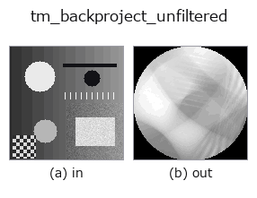

tomography op• Datenarten: image → image
• Aufruf: fullseye.apply(img, "tm_backproject_unfiltered", a=0.5, b=0.5) (das 2-D-Modell ist ein Bild plus zwei skalare Regler a,b∈[0,1])

*Die Abbildung ist die tatsächliche Ausgabe auf einer synthetischen 128×128-Eingabe. Links Eingabe, rechts Ausgabe (ein Nicht-Bild-Rückgabewert wird als Wert gezeigt).*
Einfache (UN-gefilterte) Rückprojektion des Eingabesinogramms — die klassische unscharfe Rekonstruktion. Es wird kein Rampenfilter angewendet, sodass hohe Frequenzen unterdrückt werden und sich jeder Punkt zu einer 1/r-Unschärfe ausbreitet: Dies zeigt bewusst, warum der Filter der FBP notwendig ist. `a/b werden nicht verwendet (dies ist die feste, naive Baseline). Verwendet skimage.transform.iradon mit filter_name=None`, falls verfügbar, andernfalls die einfache Rückprojektion in NumPy. Ausgabe wird wieder auf HxW angepasst.
• Leitfaden zur Familie gallery2d_physics_alife_3d
• Katalog der Beispieldaten (Download-URLs / Lizenzen) — 2-D nutzt skimage.data (BSD/Public Domain) plus synthetische Bilder, 3-D nennt Download-URLs echter Datenquellen (Stanford, PDS, …).
• Herkunft und Literatur der Operatoren — die Quellen der Forschung/Verfahren, auf denen diese Operatorfamilie beruht.
• Der kanonische Algorithmus (Autor, Jahr) und seine Anwendungen stehen im Familienleitfaden oben.
Das Programm unten ist nachweislich lauffähig (gleiche Eingabe wie die Abbildung). In der Studio-Hilfe wird dieser Block zu Schaltflächen, die es sofort laden und ausführen.
tm_backproject_unfiltered 0.50 0.50
▸ Load this pipeline · Load & run
• gallery2d_physics_alife_3d — py -3.11 examples/gallery2d_physics_alife_3d.py
image als Eingabe)identity · gaussian · mean_box · bilateral · unsharp · median · min_filter · max_filter
tomography)tm_radon_forward · tm_fbp_reconstruct · tm_sart_reconstruct · tm_sinogram_denoise
*Provenance: ops.py — 2D Operator-Registry. Diese Notiz wird von tools/opdocs.py md erzeugt (nicht von Hand bearbeiten).*
© 2026 Kazufumi Furuse — Fullseye operator documentation. Licensed under Apache-2.0.